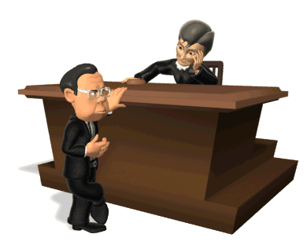
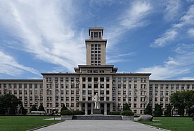

+799999999999
+799999999999

Меня зовут Павел Витальевич и я рад приветствовать вас на моей странице "Обо мне". Я родился в 1970 году и
всю свою жизнь посвятил защите прав и интересов моих клиентов в качестве адвоката.
С самого детства я ощущал в себе сильную потребность помогать людям и добиваться справедливости. Это призвание привело меня к юридической профессии, которую я выбрал не только как способ зарабатывать на жизнь, но и как средство влиять на общество и создавать правовую систему, основанную на этичности и справедливости.
В 1992 году я поступил в юридическую школу Московского университета, где обрел фундаментальные знания в области права. Во время учебы я активно участвовал в научно-исследовательской деятельности, публиковал статьи и принимал участие в международных конференциях, что помогло мне развить свои аналитические и коммуникативные навыки. 
После успешного окончания университета, я начал свою профессиональную карьеру в престижной юридической фирме в Москве. За годы практики я накопил богатый опыт в различных областях права, включая гражданское право, уголовное право и административное право. Я всегда стараюсь найти наилучшее решение для своих клиентов, стремлюсь к максимально эффективной защите их интересов. Моя опытность и высокие профессиональные качества помогают мне добиваться успеха и достигать положительных результатов в разнообразных судебных делах.
Я постоянно совершенствую свои навыки и знания, участвуя в профессиональных тренингах и семинарах, чтении специализированной литературы и поддерживая активные связи с коллегами. Также я являюсь активным участником правозащитных организаций и стараюсь вносить свой вклад в формирование современной правовой практики. Благодаря моему опыту и профессионализму, я уверен, что смогу предоставить вам высококачественные юридические услуги и помочь в решении самых сложных правовых вопросов. С неизменным энтузиазмом я приму вызови, связанные с защитой ваших прав и интересов, и буду делать все возможное, чтобы достичь справедливого и благоприятного исхода вашего дела.
Спасибо за ваше внимание, и я надеюсь, что вы найдете в моем профессиональном опыте и навыках то, что достойно вашего доверия и поддержки.
- Сентябрь 2010 - по настоящее время: Частная практика, Москва
* Специализация в уголовном праве и защите обвиняемых.
* Представление интересов клиентов в уголовных делах различной сложности, включая дела о преступлениях против личности, имущества и наркотических преступлениях.
* Подготовка обжалований, ходатайств и других юридических документов, связанных с уголовным процессом.
* Обеспечение правильного применения уголовного законодательства и защита интересов клиентов в суде.
- Март 2008 - август 2010: Адвокатское бюро "Закон и Правосудие", Санкт-Петербург
* Участие в судебных процессах по уголовным делам на стороне защиты.
* Защита интересов подозреваемых и обвиняемых в уголовных делах, включая дела о преступлениях против имущества, кражах, мошенничестве и антинаркотическом законодательстве.
* Помощь в подготовке обоснованных защитных позиций и аргументации в суде.
- Январь 2005 - февраль 2008: Адвокатское объединение "Правная защита", Москва
* Участие в расследовании и подготовке уголовных дел.
* Консультирование подозреваемых и обвиняемых по уголовным вопросам.
* Подготовка судебной документации, в том числе жалоб, апелляций и ходатайств.
* Специализация в уголовном праве и защите обвиняемых.
* Представление интересов клиентов в уголовных делах различной сложности, включая дела о преступлениях против личности, имущества и наркотических преступлениях.
* Подготовка обжалований, ходатайств и других юридических документов, связанных с уголовным процессом.
* Обеспечение правильного применения уголовного законодательства и защита интересов клиентов в суде.
- Март 2008 - август 2010: Адвокатское бюро "Закон и Правосудие", Санкт-Петербург
* Участие в судебных процессах по уголовным делам на стороне защиты.
* Защита интересов подозреваемых и обвиняемых в уголовных делах, включая дела о преступлениях против имущества, кражах, мошенничестве и антинаркотическом законодательстве.
* Помощь в подготовке обоснованных защитных позиций и аргументации в суде.
- Январь 2005 - февраль 2008: Адвокатское объединение "Правная защита", Москва
* Участие в расследовании и подготовке уголовных дел.
* Консультирование подозреваемых и обвиняемых по уголовным вопросам.
* Подготовка судебной документации, в том числе жалоб, апелляций и ходатайств.